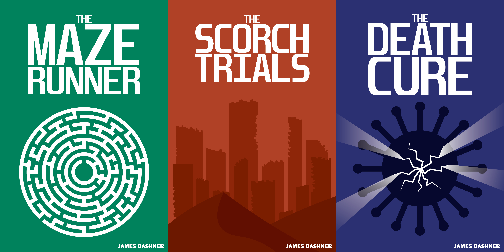
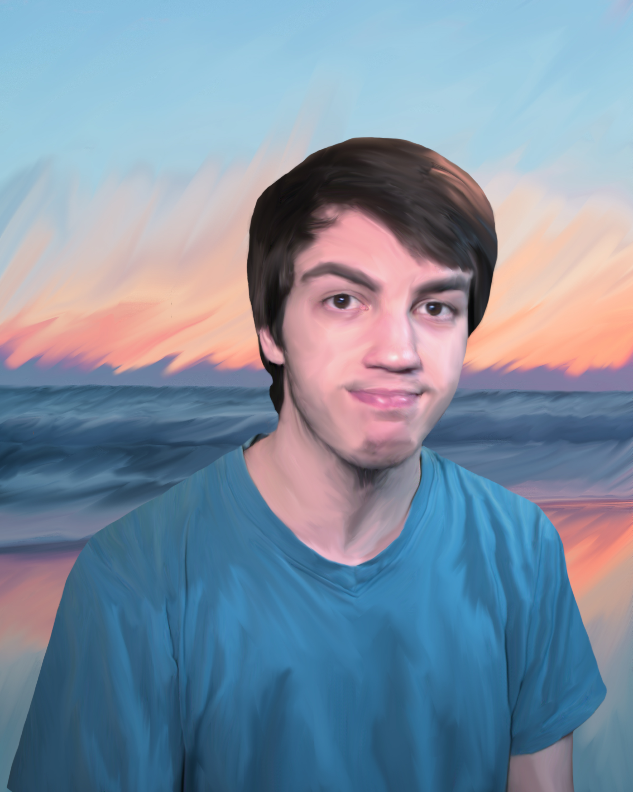

Zachary Huff
Graphic Designer
I am a graphic designer who has a passion for creating. My areas of expertise include video production/editing, photography, and illustration.
Featured Projects
View selected projects below.
New Bern Map

For this project, the goal was to create a map of a local town, I chose to create the map based off of New Bern. The map would have to include 3D structures, a compass rose, and a legend that would detail where certain places are located.
Maze Runner Book Covers
The goal of this project was to recreate book covers for a specific series. I chose to recreate book covers for the The Maze Runner series by James Dashner. The book covers would need to be remade using my own style, and would need to include elements that would allude to what the books were about.
Digital Oil Painting
For this project, the goal was to create a digital oil painting. The finished product would need to include a subject, and an altered background using the same style.
Education
Wake Tech Community College - Raleigh, North Carolina
Advertising and Graphic Design, 2020
Certificate in Graphic Design